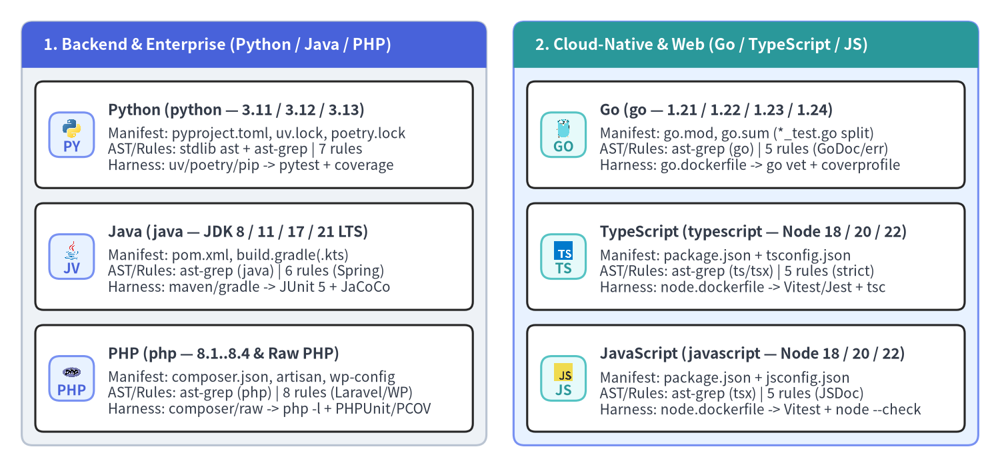
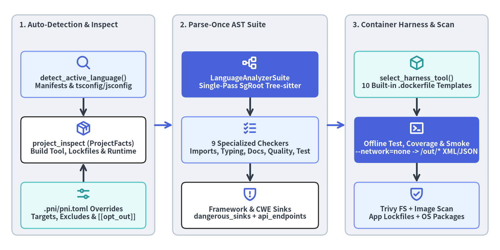

Supported 6 Languages Matrix
pni501 (v0.1.4) provides first-class, deterministic static analysis (ProjectFacts and parse-once Tree-sitter AstFacts), language-specific engineering rules, isolated container test/coverage harnesses (.pni/dockerfiles/), and Trivy security scanning across six production programming languages: Python, Java, PHP, Go, TypeScript, and JavaScript.

Source Code
from drawlib.canvas import save, setup
from drawlib.icons import code
from drawlib.smartarts import CardList, Panel
from drawlib.styles import Styles
setup(width=184, height=86, dpi=150)
left_panel = Panel(
"1. Backend & Enterprise (Python / Java / PHP)",
header_variant="filled",
header_height=8.5,
style=Styles.Neutral.patch(shape_r=2.0),
header_style=Styles.PrimaryFlat,
text_style=Styles.WhiteBold.patch(text_size=11.2),
)
left_panel.draw(xy=(4.0, 4.0), width=85.5, height=78.0)
left_cards = CardList(
style=Styles.WhiteBordered.patch(shape_r=1.5),
text_style=Styles.DarkBold.patch(text_size=10.8),
description_style=Styles.Dark.patch(text_size=10.0),
badge_shape="rounded_rect",
badge_style=Styles.PrimaryNeutral,
badge_text_style=Styles.PrimaryBold.patch(text_size=10.0),
icon_style=Styles.PrimaryBold,
direction="vertical",
spacing=2.8,
)
left_cards.add(
"Python (python — 3.11 / 3.12 / 3.13)",
"Manifest: pyproject.toml, uv.lock, poetry.lock\n"
"AST/Rules: stdlib ast + ast-grep | 7 rules\n"
"Harness: uv/poetry/pip -> pytest + coverage",
badge_text="PY",
icon=code.python,
)
left_cards.add(
"Java (java — JDK 8 / 11 / 17 / 21 LTS)",
"Manifest: pom.xml, build.gradle(.kts)\n"
"AST/Rules: ast-grep (java) | 6 rules (Spring)\n"
"Harness: maven/gradle -> JUnit 5 + JaCoCo",
badge_text="JV",
icon=code.java,
)
left_cards.add(
"PHP (php — 8.1..8.4 & Raw PHP)",
"Manifest: composer.json, artisan, wp-config\n"
"AST/Rules: ast-grep (php) | 8 rules (Laravel/WP)\n"
"Harness: composer/raw -> php -l + PHPUnit/PCOV",
badge_text="PHP",
icon=code.php,
)
left_cards.draw(xy=(6.5, 6.5), width=80.5, height=64.5)
right_panel = Panel(
"2. Cloud-Native & Web (Go / TypeScript / JS)",
header_variant="filled",
header_height=8.5,
style=Styles.PrimaryNeutral.patch(shape_r=2.0),
header_style=Styles.SecondaryFlat,
text_style=Styles.WhiteBold.patch(text_size=11.2),
)
right_panel.draw(xy=(94.5, 4.0), width=85.5, height=78.0)
right_cards = CardList(
style=Styles.WhiteBordered.patch(shape_r=1.5),
text_style=Styles.DarkBold.patch(text_size=10.8),
description_style=Styles.Dark.patch(text_size=10.0),
badge_shape="rounded_rect",
badge_style=Styles.SecondaryNeutral,
badge_text_style=Styles.SecondaryBold.patch(text_size=10.0),
icon_style=Styles.SecondaryBold,
direction="vertical",
spacing=2.8,
)
right_cards.add(
"Go (go — 1.21 / 1.22 / 1.23 / 1.24)",
"Manifest: go.mod, go.sum (*_test.go split)\n"
"AST/Rules: ast-grep (go) | 5 rules (GoDoc/err)\n"
"Harness: go.dockerfile -> go vet + coverprofile",
badge_text="GO",
icon=code.go,
)
right_cards.add(
"TypeScript (typescript — Node 18 / 20 / 22)",
"Manifest: package.json + tsconfig.json\n"
"AST/Rules: ast-grep (ts/tsx) | 5 rules (strict)\n"
"Harness: node.dockerfile -> Vitest/Jest + tsc",
badge_text="TS",
icon=code.typescript,
)
right_cards.add(
"JavaScript (javascript — Node 18 / 20 / 22)",
"Manifest: package.json + jsconfig.json\n"
"AST/Rules: ast-grep (tsx) | 5 rules (JSDoc)\n"
"Harness: node.dockerfile -> Vitest + node --check",
badge_text="JS",
icon=code.javascript,
)
right_cards.draw(xy=(97.0, 6.5), width=80.5, height=64.5)
save()
1. End-to-End 6-Language Capability Matrix
Every supported language plugs into the same LanguageAnalyzerSuite protocol (src/pni/_actions/ast_analyze/runner.py) and 4-stage containerized runtime verifier (src/pni/_actions/runtime_check/runner.py), producing normalized ProjectFacts, AstFacts, RuntimeFacts, and SecurityScanFacts schemas regardless of the underlying runtime.
| Dimension | Python (python) |
Java (java) |
PHP (php) |
Go (go) |
TypeScript (typescript) |
JavaScript (javascript) |
|---|---|---|---|---|---|---|
| Manifests & Lockfiles | pyproject.toml, setup.py, requirements.txt, uv.lock, poetry.lock |
pom.xml, build.gradle(.kts), settings.gradle(.kts), gradle.lockfile |
composer.json, composer.lock, artisan, wp-config.php, raw *.php |
go.mod, go.sum, go.work |
package.json, tsconfig.json, pnpm-lock.yaml, package-lock.json, yarn.lock |
package.json, jsconfig.json, pnpm-lock.yaml, package-lock.json, yarn.lock |
| Source Extensions | .py |
.java |
.php, .phtml |
.go (auto-splits *_test.go) |
.ts, .tsx (excludes .d.ts, splits *.test.ts) |
.js, .jsx, .mjs, .cjs (credits companion .d.ts) |
| AST Parser Engine | Python ast + ast-grep-py (python) |
ast-grep-py (java) |
ast-grep-py (php + mixed HTML preprocessor) |
ast-grep-py (go) |
ast-grep-py (typescript / tsx) |
ast-grep-py (tsx) |
| Language Actions | python_ast_audit, python_test_audit |
java_ast_audit, java_test_audit |
php_ast_audit, php_test_audit |
go_ast_audit, go_test_audit |
typescript_ast_audit, typescript_test_audit |
javascript_ast_audit, javascript_test_audit |
| Built-in Rule Files | 7 files (code_quality, typing, dependencies, modern_stack, testing, frameworks/fastapi, workflow_guide) |
6 files (code_quality, typing, dependencies, testing, frameworks/spring_boot, workflow_guide) |
8 files (code_quality, typing, dependencies, modern_stack, testing, frameworks/laravel, frameworks/wordpress, workflow_guide) |
5 files (code_quality, typing, dependencies, testing, workflow_guide) |
5 files (code_quality, typing, dependencies, testing, workflow_guide) |
5 files (code_quality, typing, dependencies, testing, workflow_guide) |
| Container Templates | python/uv.dockerfile, poetry.dockerfile, pip.dockerfile (3.11–3.13) |
java/maven.dockerfile, gradle.dockerfile (Temurin 8/11/17/21) |
php/composer.dockerfile, raw.dockerfile (PHP CLI 8.1–8.4) |
go/go.dockerfile (Golang Bookworm 1.22–1.24, non-root USER pni) |
typescript/node.dockerfile (Node Bookworm 18/20/22 + Playwright Chromium) |
javascript/node.dockerfile (Node Bookworm 18/20/22 + Playwright Chromium) |
| Offline Test & Coverage | pytest --junitxml=/out/junit.xml --cov --cov-report=json:/out/coverage.json |
mvn test / gradle test + JaCoCo XML (/out/jacoco.xml) |
php -l syntax gate + phpunit + PCOV Clover (/out/clover.xml) |
go vet ./... + go test -v -coverprofile=/out/coverage.out ./... |
vitest run / jest --coverage (coverage-summary.json / lcov.info), WTR, Mocha, or tsc --noEmit |
vitest run / jest --coverage / @web/test-runner / Mocha / node --test |
| Stage 3 Smoke Probe | ASGI/WSGI TestClient health probe, CLI --help, or importlib.import_module |
Spring Boot TCP :18080 bind probe, main --help, or target/classes check |
php -S HTTP route probe, php artisan --version, PSR-4 autoload, or WP plugin hook stub |
go build ./... full module compilation & link verification |
tsc --noEmit compiler check (including monorepo subpackages) or Node runtime verification |
node --check syntax verification across .js/.mjs/.cjs files |
2. Deterministic Language Auto-Detection & Sandboxed Execution
When you run pni init, pni rules list, or execute a workflow step, detect_active_language() in src/pni/_rules/manager.py resolves the repository's primary language deterministically without requiring manual flags:
- Primary Manifest Inspection: Checks top-level build manifests in strict priority order:
- Python:
pyproject.toml,setup.py,requirements.txt - Java:
pom.xml,build.gradle,build.gradle.kts,settings.gradle,settings.gradle.kts - PHP:
composer.json,wp-config.php,wp-config-sample.php,artisan,phpunit.xml,phpunit.xml.dist - Go:
go.mod,go.work
- Python:
- Node.js TypeScript vs. JavaScript Disambiguation (
_detect_node_language):- Returns
typescriptimmediately iftsconfig.jsonortsconfig.base.jsonexists, or ifpackage.jsondeclares"typescript"independenciesordevDependencies. - Returns
javascriptifjsconfig.jsonexists, or inspects.ts/.tsx(excluding.d.ts) vs..js/.jsx/.mjs/.cjssource files undersrc/,app/,lib/,packages/,pages/, andcomponents/.
- Returns
- Source Tree Extension Fallback: Scans standard source directories (
src/main/java,cmd/,internal/,pkg/,app/,public/,includes/) before defaulting topython.

Source Code
from drawlib.canvas import save, setup
from drawlib.diagrams.architecture import ArchitectureDiagram, Node, NodeGroup, PhosphorIcon
from drawlib.styles import Styles
setup(width=168, height=84, dpi=150)
diag = ArchitectureDiagram(
node_style=Styles.PrimaryBold,
node_text_style=Styles.DarkBold.patch(text_size=10.0),
edge_style=Styles.DarkBold,
edge_text_style=Styles.DarkBold.patch(text_size=9.8),
node_card_style=Styles.WhiteBordered.patch(shape_r=1.5),
)
g_detect = diag.add(
NodeGroup(
title="1. Auto-Detection & Inspect",
width=48.0,
height=74.0,
style=Styles.Neutral.patch(shape_r=2.0),
text_style=Styles.DarkBold.patch(text_size=10.5, halign="left", valign="top"),
),
xy=(4.0, 5.0),
)
n_manifest = g_detect.add(
Node(
"detect_active_language()\nManifests & tsconfig/jsconfig",
width=42.0,
height=15.5,
icon=PhosphorIcon.MAGNIFYING_GLASS,
icon_size=5.2,
card_style=Styles.PrimaryNeutral.patch(shape_r=1.5),
),
xy=(24.0, 54.0),
)
n_inspect = g_detect.add(
Node(
"project_inspect (ProjectFacts)\nBuild Tool, Lockfiles & Runtime",
width=42.0,
height=15.5,
icon=PhosphorIcon.PACKAGE,
icon_size=5.2,
),
xy=(24.0, 32.0),
)
n_pni_toml = g_detect.add(
Node(
".pni/pni.toml Overrides\nTargets, Excludes & [[opt_out]]",
width=42.0,
height=15.5,
icon=PhosphorIcon.SLIDERS_HORIZONTAL,
icon_size=5.2,
style=Styles.SecondaryBold,
card_style=Styles.SecondaryNeutral.patch(shape_r=1.5),
),
xy=(24.0, 10.0),
)
g_ast = diag.add(
NodeGroup(
title="2. Parse-Once AST Suite",
width=52.0,
height=74.0,
style=Styles.Neutral.patch(shape_r=2.0),
text_style=Styles.DarkBold.patch(text_size=10.5, halign="left", valign="top"),
),
xy=(58.0, 5.0),
)
n_suite = g_ast.add(
Node(
"LanguageAnalyzerSuite\nSingle-Pass SgRoot Tree-sitter",
width=46.0,
height=15.5,
icon=PhosphorIcon.TREE_STRUCTURE,
icon_size=5.2,
style=Styles.WhiteBold,
text_style=Styles.WhiteBold.patch(text_size=10.0),
card_style=Styles.PrimaryFlat.patch(shape_r=1.5),
),
xy=(26.0, 54.0),
)
n_checkers = g_ast.add(
Node(
"9 Specialized Checkers\nImports, Typing, Docs, Quality, Test",
width=46.0,
height=15.5,
icon=PhosphorIcon.LIST_CHECKS,
icon_size=5.2,
card_style=Styles.PrimaryNeutral.patch(shape_r=1.5),
),
xy=(26.0, 32.0),
)
n_sec_ast = g_ast.add(
Node(
"Framework & CWE Sinks\ndangerous_sinks + api_endpoints",
width=46.0,
height=15.5,
icon=PhosphorIcon.SHIELD_WARNING,
icon_size=5.2,
),
xy=(26.0, 10.0),
)
g_runtime = diag.add(
NodeGroup(
title="3. Container Harness & Scan",
width=48.0,
height=74.0,
style=Styles.Neutral.patch(shape_r=2.0),
text_style=Styles.DarkBold.patch(text_size=10.5, halign="left", valign="top"),
),
xy=(116.0, 5.0),
)
n_select = g_runtime.add(
Node(
"select_harness_tool()\n10 Built-in .dockerfile Templates",
width=42.0,
height=15.5,
icon=PhosphorIcon.CUBE,
icon_size=5.2,
style=Styles.SecondaryBold,
card_style=Styles.SecondaryNeutral.patch(shape_r=1.5),
),
xy=(24.0, 54.0),
)
n_offline = g_runtime.add(
Node(
"Offline Test, Coverage & Smoke\n--network=none -> /out/* XML/JSON",
width=42.0,
height=15.5,
icon=PhosphorIcon.TERMINAL_WINDOW,
icon_size=5.2,
style=Styles.WhiteBold,
text_style=Styles.WhiteBold.patch(text_size=10.0),
card_style=Styles.PrimaryFlat.patch(shape_r=1.5),
),
xy=(24.0, 32.0),
)
n_trivy = g_runtime.add(
Node(
"Trivy FS + Image Scan\nApp Lockfiles + OS Packages",
width=42.0,
height=15.5,
icon=PhosphorIcon.SHIELD_CHECK,
icon_size=5.2,
card_style=Styles.PrimaryNeutral.patch(shape_r=1.5),
),
xy=(24.0, 10.0),
)
diag.connect(n_manifest, n_inspect, routing="orthogonal")
diag.connect(n_pni_toml, n_inspect, routing="orthogonal")
diag.connect(n_suite, n_checkers, routing="orthogonal")
diag.connect(n_checkers, n_sec_ast, routing="orthogonal")
diag.connect(n_select, n_offline, routing="orthogonal")
diag.connect(n_offline, n_trivy, routing="orthogonal")
diag.connect(g_detect, g_ast, routing="orthogonal", style=Styles.PrimaryBold)
diag.connect(g_ast, g_runtime, routing="orthogonal", style=Styles.PrimaryBold)
diag.draw(xy=(0.0, 0.0))
save()
2.1 Python & Java Ecosystems
For Python (pyproject.toml, uv, Poetry, pip) and Java (Maven, Gradle), configure targets in .pni/workflows/full_audit.yaml so generated artifacts (target/, build/, Alembic migrations/versions/) are excluded from source AST metrics:
# Python PEP 621 src/ layout (or source: ["app"] for FastAPI services)
targets:
root: "."
source: ["src"]
tests: ["tests"]
docs: ["README.md"]
# Java Maven / Gradle standard layout
targets:
root: "."
source: ["src/main/java"]
tests: ["src/test/java"]
docs: ["README.md"]
2.2 PHP & Go Ecosystems
PHP supports both modern Composer/PSR-4 applications (Laravel, Symfony) and legacy Composer-less raw PHP (raw.dockerfile) or WordPress plugins. Go (go.mod) automatically partitions production *.go files from co-located *_test.go files even when source and tests point to the same directories:
# PHP Laravel layout (use source: ["."] for legacy raw PHP or WordPress plugins)
targets:
root: "."
source: ["app", "src", "routes"]
tests: ["tests"]
docs: ["README.md"]
# Go module layout (co-located *_test.go files are separated automatically)
targets:
root: "."
source: ["cmd", "internal", "pkg"]
tests: ["cmd", "internal", "pkg"]
docs: ["README.md"]
2.3 TypeScript & JavaScript Ecosystems
In TypeScript and JavaScript repositories, LanguageAnalyzerSuite automatically excludes ambient declaration files (*.d.ts) from production AST bloat while crediting companion .d.ts declarations (package.json "types"/"typings" or co-located *.d.ts) as has_type_marker = True for JavaScript libraries, unwraps IIFE/UMD closures and ES2022 #private methods, separates index.ts barrel re-export loops (type_checking_cycles) from true circular_dependencies, and splits co-located *.test.ts(x), *.spec.ts(x), *.test.js(x), *.spec.js(x), and __tests__/ files into the test analyzer:
# TypeScript / JavaScript layout (supports dedicated tests/ or co-located src/**/*.test.ts)
targets:
root: "."
source: ["src"]
tests: ["tests", "src"]
docs: ["README.md"]
3. Language-Specific AST Checkers & CWE Security Sinks
Every LanguageAnalyzerSuite parses each source file once into a Tree-sitter CST (SgRoot) and dispatches nine specialized checkers (imports, typing, docs, quality, dependencies, testing, framework, operational, and security):
| Language | Typing & Contract Signals | Code Quality & Operational Signals | Framework & CWE Security Sinks (dangerous_sinks) |
|---|---|---|---|
| Python | Public parameter/return annotation %, Any / bare type: ignore, py.typed marker |
isort import grouping, Google/NumPy/Sphinx docstrings + Args: sync, McCabe (>7) & cognitive (>15) complexity, mutable defaults, bare except:, missing timeout= |
FastAPI on_event, missing response_model, sync I/O inside async def; eval/exec (CWE-94), subprocess(..., shell=True) (CWE-78), pickle/yaml.load (CWE-502), raw SQL f-strings (CWE-89) |
| Java | Generic type safety %, raw types (List without <T>), unscoped @SuppressWarnings |
Wildcard import .*, Javadoc coverage & @param alignment, mutable public static fields, empty catch blocks, System.out.println in services |
Spring Boot @Autowired field injection, non-public @Transactional, javax.* vs jakarta.*; Runtime.exec (CWE-78), ObjectInputStream.readObject (CWE-502), string-concatenated JDBC/JPQL (CWE-89) |
| PHP | declare(strict_types=1) ratio, parameter/return/property type hints, unscoped @phpstan-ignore |
PSR-4 namespace vs include/require_once, mixed HTML/PHP spaghetti, $_GET/$_POST/$GLOBALS coupling, @ error suppression, die()/exit(), magic-hash == |
Laravel env() outside config/, mass-assignment $guarded = [], raw DB::raw(); WordPress unescaped $_GET SQLi/XSS & missing check_admin_referer; eval/shell_exec/unserialize (CWE-94/78/502) |
| Go | Concrete/generic types vs untyped any / interface{} (exempting format string, ...any), unsafe.Pointer usage, bare //nolint |
gofmt/import grouping, dot imports (import .), GoDoc comments on exported symbols, blank/partial error assignment (_ = err, val, _ := ...), multiline raw backtick LOC exemption, panic() in non-main packages, defer in loops |
Gin/Echo/Fiber/Chi/net-http route extraction (api_endpoints), exec.Command("sh", "-c", ...) (CWE-78), formatted db.Query(fmt.Sprintf(...)) (CWE-89), HTTP client without Timeout |
| TypeScript | tsconfig.json "strict": true, explicit export types, : any / as any, @ts-ignore vs @ts-expect-error, expectTypeOf<T>() / assertType<T>() |
ES module import hygiene, barrel type_checking_cycles separation, TSDoc (/** ... */) coverage, ES2022 #private methods, unhandled Promises, empty catch {}, var declarations, == loose equality |
Express/Fastify/NestJS/Hono/Next.js route discovery, dangerouslySetInnerHTML / innerHTML (CWE-79), eval / new Function (CWE-94), child_process.exec (CWE-78), SQL template literals (CWE-89) |
| JavaScript | JSDoc @param {Type} and @returns {Type} contract coverage, companion .d.ts type declarations (has_type_marker), checkJs / // @ts-check, untyped @param {*} |
ES module import/export vs legacy CommonJS require(), IIFE/UMD closure unwrapping, const/let vs var, strict ===, Promise .catch() hygiene, cognitive complexity |
Express/Fastify/Hono route discovery, DOM XSS (innerHTML, document.write, CWE-79), eval() (CWE-94), child_process.exec (CWE-78), unparameterized SQL queries (CWE-89) |
See Rules & CLI Reference for the complete catalog of 52 built-in rule files, .pni/ local customization cascade, and pni CLI commands, or explore Analyzers & Live Pentest for deep dives into containerized runtime and DAST verification.